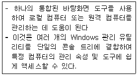
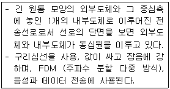

PC정비사-2급 (2011-10-23 기출문제)
1과목: PC유지보수
1. E-IDE HDD와 CD-ROM 장치를 연결할 때 최적의 전송속도를 낼 수 있는 방법은?
- HDD는 프라이머리 마스터, CD-ROM은 세컨드리 마스터로 한다.
- HDD는 프라이머리 마스터, CD-ROM은 프라이머리 슬레이브로 한다.
- HDD는 프라이머리 마스터, CD-ROM은 세컨드리 슬레이브로 한다.
- CD-ROM은 프라이머리 마스터, HDD는 세컨드리 마스터로 한다.
(정답률: 64%)

2. 시스템의 기본 하드웨어 설정 값이 저장된 곳은?
- RAM
- CMOS
- HDD
- CD-ROM
(정답률: 86%)
3. Boot.ini 옵션 중 안전모드로 부팅하는 옵션값은?
- /BOOTLOG
- /SAFEBOOT
- /BASEVIDEO
- /NOGUIBOOT
(정답률: 83%)
4. PC 조립 방법에 대해 설명한 것 중 잘못된 것은?
- 그래픽 카드는 모니터를 연결할 때 슬롯에서 쉽게 빠질 수 있다. 그래서 최근 메인보드는 이를 막기 위해 잠금 장치를 제공한다.
- CPU에서 발생하는 열을 식히기 위해 냉각팬을 CPU 위에 설치하고, 냉각팬은 메인보드로부터 작동하기 위한 전원을 공급받는다.
- 병렬 방식의 하드디스크를 지원하는 P-ATA 커넥터는, 직렬방식인 S-ATA 케이블보다 작고 점퍼 설정도 할 필요가 없다.
- 메모리를 소켓에 꽂을 때는 메모리의 구멍을 소켓의 홈에 맞춘 다음 수직으로 세워 눌러주면 된다.
(정답률: 81%)
5. Standard CMOS Setup에서 Halt On에 대한 설명으로 올바른 것은?
- All, But Keyboard - 키보드 오류에 대해서만 POST를 멈추지 않는다.
- All Errors - 어떤 에러가 발생해도 POST를 계속 진행한다.
- No Errors - 바이오스가 비치명적인 에러 검출 시 POST를 중지하고 알려준다.
- No, But Keyboard - 키보드 오류에 대해서만 POST를 멈추지 않는다.
(정답률: 63%)
6. CD-레코딩 중에 ‘Buffer Underrun’ 이라는 Error 메시지가 출력 되었다. 원인과 해결책으로 올바른 것은?
- 레코딩 할 데이터가 있는 원본 디스크의 데이터 전송 속도가 느린 경우 발생할 수 있으므로, 원본 데이터를 전송 속도가 빠른 곳으로 이동시킨다.
- CD 미디어의 최대 지원 속도가 느린 경우 발생할 수 있으므로, 좀 더 빠른 미디어로 교체한다.
- CD 레코더의 버퍼 메모리가 너무 커서 나는 에러이므로, CD 레코더의 버퍼 메모리를 일부 사용하지 않도록 설정한다.
- CD를 너무 느린 배속으로 동작하도록 해서 나는 에러이므로, 좀 더 빠른 배속으로 동작하도록 설정한다.
(정답률: 51%)
7. Award BIOS Setup의 ‘Standard BIOS Features’ 항목에서 정상적으로 설정하지 않으면 사용할 수 없는 것은?
- 마우스
- 키보드
- 플로피디스크
- 메모리
(정답률: 67%)
8. Plug & Play에 대한 설명으로 잘못된 것은?
- 컴퓨터 부팅과 함께 작동하며 각 하드웨어를 검색한다.
- 하드디스크를 포맷하기 위한 작업이다.
- 하드웨어를 컴퓨터에 설치하기만 하면 자동으로 인식한다.
- Windows에서 하드웨어를 쉽게 설치할 수 있도록 해주는 작업이다.
(정답률: 82%)
9. 컴퓨터에 전원을 공급한 후에 BIOS 부팅 화면부터 심하게 흔들리더니, Windows로 부팅한 후에도 화면이 심하게 흔들리고 있다. 모니터를 다른 것으로 교체해도 마찬가지일 경우, 이에 대한 원인으로 잘못된 것은?
- 하드디스크 커넥터 이상
- 모니터 연결 커넥터의 고장
- 그래픽 카드에서 전송하는 신호 오류
- 그래픽 카드 장착상태 불량
(정답률: 66%)
10. BIOS에 의한 부팅 시, 동작하는 주요 파일에 대한 설명 중 잘못된 것은?
- .sys 파일은 드라이버 설정과 관련된다.
- .dll 파일은 프로토콜과 관련된다.
- 운영체제의 식별을 위해 MBR에 정보를 저장한다.
- dll 내의 함수를 호출하는 프로그램은 boot.int 이다.
(정답률: 65%)
11. 모니터에서 발생하는 전자파의 피해를 최소화하기 위한 방법으로 잘못된 것은?
- EMI 규격에 맞는 제품을 사용한다.
- 모니터를 장시간 사용 할 경우 주기적으로 휴식을 취한다.
- TCO 규격을 인증한 모니터를 사용한다.
- 모니터의 해상도를 높게 설정하여 사용한다.
(정답률: 89%)
12. RAM을 업그레이드하고 컴퓨터를 조립하였더니 화면에 아무것도 나타나지 않고 경고 비프음만 들릴 때, 확인해야 할 사항으로 잘못된 것은?
- RAM의 이상 유무
- 메인보드의 이상 유무
- 그래픽 카드의 이상 유무
- 키보드의 이상 유무
(정답률: 75%)
13. BIOS의 기능 중 부팅 시 하드웨어의 이상 유무를 점검하는 것은?
- POST (Power On Self Test)
- IEEE (Institute of Electrical and Electronics Engineers)
- SCSI (Small Computer System Interface)
- FIFO (First In First Out)
(정답률: 85%)
14. PC를 부팅하자 BIOS의 설정이 초기화 되어 BIOS Setup 화면으로 들어가 설정을 변경 한 후, PC의 전원을 다시 켜도 설정이 초기화 된다. 해결 방법으로 올바른 것은?
- HDD를 교체한다.
- 메인보드를 업그레이드 한다.
- 메인보드 배터리를 교체한다.
- Windows를 다시 설치한다.
(정답률: 87%)
15. 하나의 프로세서가 두 개의 논리적 프로세서처럼 작동하도록 하는 기술은?
- 하이퍼트랜스포트(HyperTransport)
- 하이퍼 스레딩(Hyper-Threading)
- 멀티 태스킹(Multitasking)
- 넷 버스트(Netburst)
(정답률: 72%)
2과목: PC운영체제
16. Windows XP에서 ‘드라이브의 문자 또는 경로’ 를 사용자가 원하는 문자로 변경하기 위하여 사용하는 명령어는?
- fsmgmt.msc
- diskmgmt.msc
- services.msc
- eventvwr.msc
(정답률: 72%)
17. Windows XP의 제어판에서 할 수 없는 작업은?
- 날짜 및 시간 설정
- 바탕화면 배색 설정
- 키보드 설정
- 시작 프로그램 설정
(정답률: 72%)
18. 새로 추가한 드라이버가 하드웨어와 맞지 않아 발생하는 문제들을 복구하기 위하여 마지막으로 성공한 구성을 선택하여 부팅한 경우 Windows XP의 다른 레지스트리 키의 모든 변경 사항은 그대로 유지하지만 일부 레지스트리 키는 복원된다. 복원되는 레지스트리 키로 올바른 것은?
- HKEY_LOCAL_MACHINE\SOFTWARE\Microsoft
- HKEY_LOCAL_MACHINE\System\CurrentControlSet
- HKEY_LOCAL_MACHINE\HARDWARE\ACPI
- HKEY_CURRENT_CONFIG\Software\Microsoft
(정답률: 63%)
19. 두 개 이상의 프로세스를 동시에 처리할 수 없으므로, 프로세스에 대한 순서를 결정하는 것은?
- 상호 배제
- 임계 구역
- 동기화
- 시분할 처리
(정답률: 63%)
20. Windows XP의 사용자 관리에서 로그온/로그오프 옵션에 관련된 설명 중 잘못된 것은?
- Windows XP는 기본적으로 새로운 시작이라는 형식의 로그온 화면을 가지고 있다.
- 사용자 등록은 한번만 가능하다.
- Windows 2000에서 사용된 방식과 같이 사용자 이름과 암호를 입력하여 로그온 하는 방식을 사용할 수 있다.
- 빠른 사용자 전환 사용 옵션을 사용 할 수 있다.
(정답률: 88%)
21. Windows XP의 제어판에서 네트워크를 설정할 때 설치 가능한 구성 요소의 유형이 아닌 것은?
- 클라이언트
- 서비스
- 프로토콜
- 서버
(정답률: 73%)
22. NTFS(NT File System)에 관한 설명 중 잘못된 것은?
- 용량이 큰 하드디스크 분할 영역에 있는 파일들을 매우 효과적으로 관리한다.
- Windows NT, DOS, Windows XP, OS/2가 모두 기본적으로 NTFS 볼륨을 사용할 수 있다.
- 파일 압축 기능을 지원한다.
- 파일이나 디렉터리에 접근 로그를 유지할 수 있다.
(정답률: 70%)
23. 하드디스크 최적화와 관련된 설명으로 잘못된 것은?
- 주기적으로 디스크 정리를 이용하여 선택한 디스크의 임시 인터넷 파일이나 다운로드한 프로그램 파일 등을 비워 빈 공간을 유지한다.
- 디스크 속도가 예전보다 느려지면 디스크 조각 모음을 실행해 디스크 최적화를 유지한다.
- NTFS는 FAT32 파일 시스템보다 시스템 안정성이 향상되지만 100GByte 이상의 하드디스크에서는 사용할 수 없다.
- 디스크 검사를 이용해 하드디스크에 문제가 있는지 정기적으로 검사한다.
(정답률: 87%)
24. Outlook Express에서는 여러 가지 방법으로 메일 메시지와 뉴스 메시지를 제어할 수 있다. 다음 중 잘못된 것은?
- 특정 인물이 보낸 메일을 받지 않도록 할 수 있다.
- 바이러스 가능성이 있는 첨부 파일을 저장하거나 열 수 없도록 설정 할 수 있다.
- 원하지 않는 메시지가 들어 있는 메일을 차단할 수 있다.
- 잘못된 내용으로 보낸 메일을 받은 사람의 메일 서버에서 삭제 할 수 있다.
(정답률: 79%)
25. 사용 중인 프로그램으로 다른 프로그램에서 작성한 객체를 포함시킬 수 있는 객체 지향 용어는?
- OLE(Object Linking Embedding)
- Multitasking
- Rasterizing
- SPOOL(Simultaneous Peripheral Operation On-Line)
(정답률: 67%)
26. Windows의 명령 프롬프트에서 사용되는 ‘format’ 명령어에 대한 설명으로 잘못된 것은?
- 포맷은 하드디스크나 USB 드라이브의 파일시스템을 초기화하기 위해 사용한다.
- 포맷을 실행할 경우 디스크에 있는 모든 데이터는 삭제된다.
- ‘/FS:파일시스템’ 옵션을 사용하여 파일 시스템의 종류를 지정할 수 있다.
- '/C' 옵션은 이미 포맷하여 사용하던 디스크에만 사용할 수 있는 옵션으로 파일 할당표와 루트 디렉터리만 삭제하는 방법으로 빠르게 포맷한다.
(정답률: 63%)
27. Windows XP에서 TEST.EXE라는 파일이 C 드라이브의 어느 디렉터리에 위치하는지 찾을 경우 명령 프롬프트창(c:\)에서 사용할 수 있는 명령어로 올바른 것은?
- DIR TEST.EXE
- DIR TEST.EXE /X
- DIR TEST.EXE /S
- DIR TEST.EXE /W
(정답률: 64%)
28. Windows XP의 복구 콘솔에 대한 설명 중 잘못된 것은?
- Windows 복구 콘솔을 사용하면 Windows 그래픽 사용자 인터페이스(GUI)를 시작하지 않고 NTFS 파일 시스템, FAT 및 FAT32 볼륨에 제한적으로 액세스할 수 있다.
- 관리자 자격을 가지지 않아도 복구 콘솔을 사용할 수 있다.
- 컴퓨터를 시작할 수 없는 경우 설치 디스크나 CD에서 복구 콘솔을 실행할 수 있다.
- 복구 콘솔에서 마스터 부트 레코드(MBR) 또는 파일 시스템 부트 섹터를 복구할 수 있다.
(정답률: 71%)
29. Windows XP 제어판의 관리도구 중 무엇에 관한 설명인가?

- 서비스
- 이벤트 뷰어
- 컴퓨터 관리
- 성능
(정답률: 84%)
30. 제시된 컴퓨터 상황이 바이러스의 감염과 관련 없는 것은?
- 화면에 이상한 글이 표시 된다.
- 몇몇 파일이나 프로그램이 갑자기 사라진다.
- 컴퓨터에서 타는 냄새가 난다.
- 컴퓨터 부팅시간이 평소보다 오래 걸린다.
(정답률: 92%)
3과목: PC주변기기
31. PC에서 사용되는 주기억장치(Main Memory)의 특성으로 올바른 것은?
- 하드디스크나 플로피디스크를 주기억장치로 사용한다.
- 휘발성 메모리이다.
- 보조기억장치에 비해 속도가 느리다.
- CPU 캐시 메모리에 비해 속도가 빠르다.
(정답률: 68%)
32. 동급 해상도임에도 불구하고 레이저 프린터에 비해 잉크젯 프린터 출력물이 덜 선명한 이유로 올바른 것은?
- 출력 속도가 느리기 때문이다.
- 레이저 프린터는 반드시 레이저 프린터 전용 용지를 사용해야 하기 때문이다.
- 잉크 방울이 종이에 닿는 순간 번짐 현상이 일어나기 때문이다.
- 잉크를 녹이는 온도가 약해서이다.
(정답률: 86%)
33. 프로그램 카운터를 미리 예측하고, 필요할 것으로 예상되는 명령어를 수행함으로써 실행속도를 향상시키는 것은?
- 다중 분기예측
- D.I.B
- 예측실행
- MMX
(정답률: 79%)
34. 하드디스크에 대한 설명 중 잘못된 것은?
- 하드디스크는 안정적으로 동작하기 위해 안정된 전원 전압이 공급되어야 한다.
- 하드디스크는 전기적 충격이나 물리적 충격으로 손상되기 전에는 플로피 디스켓에 비해 장시간 사용할 수 있다.
- 하드디스크는 바이러스 감염에 의해 자료가 손상되면 기계적으로도 하드디스크의 부품들이 손상되므로 주의하여야 한다.
- 하드디스크는 컴퓨터 내부에 있지만 외부적 충격에 약하므로 주의하여야 한다.
(정답률: 73%)
35. 그래픽 카드 인터페이스로 올바른 것은?
- SCSI
- IDE
- PCI-Express
- NIC
(정답률: 75%)
36. L2 Cache에 대한 설명으로 잘못된 것은?
- CPU와 다른 장치와의 속도차이를 극복하기 위해 사용된다.
- 자주 반복되는 연산을 처리하기 위해 필요한 저장 공간이다.
- intel i5 계열의 CPU는 L2 Cache를 내부에 포함하고 있다.
- CPU의 종류에 따라 용량이 틀릴 수도 있다.
(정답률: 54%)
37. 하나의 물리적인 하드디스크를 여러 개의 논리적인 하드디스크로 분할하는 것은?
- 파티션
- 플래터
- 로우레벨 포맷
- 스테핑
(정답률: 86%)
38. 그래픽 카드를 구성하는 요소가 아닌 것은?
- VESA(Video Electronics Standard Association)
- VGA Chipset
- Video Memory
- DAC(Digital to Analog Converter)
(정답률: 47%)
39. ATX형 메인보드에 통합된 입출력 포트는 컬러로 구분할 수 있도록 되어 있다. PS/2 마우스 포트의 컬러는?
- 노란색
- 녹색
- 붉은색
- 검정색
(정답률: 78%)
40. CD-R 디스크에 데이터를 기록할 때, 필요한 만큼의 용량만 기록한 후 추후 데이터를 추가할 수 있는 방식은?
- 싱글 세션(Single Session)
- 싱글 레이어(Single Layer)
- 멀티 세션(Multi Session)
- 멀티 레이어(Multi Layer)
(정답률: 69%)
41. 운영 체제에 아무런 이상이 없이 빠른 속도로 그래픽 카드를 제어할 수 있는 표준 규격이 아닌 것은?
- DirectX
- OpenGL
- DCI
- DMA
(정답률: 60%)
42. 사운드 카드를 이용하여 화상회의, 음성통신을 하려고 한다. 꼭 지원해야 하는 기능은?
- ASP
- Full Duplex
- Half Duplex
- DSP
(정답률: 65%)
43. 입력 장치의 범주에 속하지 않는 것은?
- 조이스틱
- 플로터
- 마우스
- 디지타이저
(정답률: 78%)
44. VGA모드의 해상도 중 표준 해상도가 아닌 것은?
- 275 × 350
- 640 × 480
- 800 × 600
- 1024 × 768
(정답률: 80%)
45. 하드웨어에 장착된 칩 속에 삽입되어 영구적으로 컴퓨터 장치의 일부가 되는 소프트웨어로 필요에 따라 프로그램을 수정할 수 있는 것은?
- Middleware
- SCSI
- RAM
- Firmware
(정답률: 75%)
4과목: PC네트워크
46. 가정용 인터넷망에 관한 설명 중 잘못된 것은?
- ADSL은 비대칭의 송수신 속도를 가지고 있다.
- UTP 케이블을 이용하여 인터넷을 이용할 경우10Mbps 이상의 속도는 지원이 불가능하므로, 10Mbps 이상의 속도를 원할 경우 전체 선로를 광케이블로 구성해야 한다.
- FTTH는 기존의 전화망을 이용하여 연결할 수 없다.
- VDSL은 비대칭의 송수신 속도를 가지고 있다.
(정답률: 63%)
47. 다음에서 설명하는 전송 케이블은?

- 동축 케이블(Coaxial Cable)
- 비차폐 꼬임전선(UTP)
- 차폐 꼬임전선(STP)
- 광 섬유(Optical Fiber)
(정답률: 78%)
48. IP 주소의 부족에 대한 대안으로 내놓은 IPv6 프로토콜의 길이는?
- 32비트
- 64비트
- 128비트
- 256비트
(정답률: 73%)
49. 네트워크의 보안을 위하여 설치하는 별도의 보안용 서버이며, 게이트웨어에 설치, 외부인으로부터 자신의 공개되지 않은 자원에 접근을 막는 역할을 무엇이라고 하는가?
- 해킹
- 크랙
- 접근제어
- 방화벽
(정답률: 85%)
50. UTP 케이블 중에서 최고 100Mbps까지 전송속도를 지원하는 것은?
- Category 1
- Category 3
- Category 4
- Category 5
(정답률: 57%)